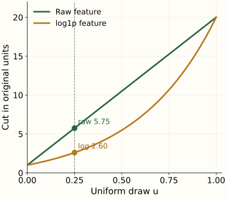

Model Sparse, Heavy-Tailed Telemetry Without Flagging Every Large Customer
Before you start: Know that Isolation Forest cuts the feature coordinates you supply. Its score is only as meaningful as that representation.
An application sends 2,000 events in a large tenant and 60 in a small tenant. Ranking raw counts makes the large tenant stand out. Dividing by active users may reveal a different story: the large tenant is at its ordinary rate, while the small tenant is at three times that rate.
Before fitting a detector, define one observation, its exposure, the collection coverage, and the peers it should resemble. These choices determine what “unusual” can mean. All counts below are synthetic.
The row defines the behavior you can detect
A tenant is an organization using the service. One row per application combines activity across tenants. One row per application–tenant pair preserves where it happened. Use a fixed observation window, such as the seven days ending at the scoring time, and name the event type being counted.
The global rate is near 2. A single row cannot show which tenant changed.
The global rate is 2,060/1,011 ≈ 2.04, close to the reference rate 2. The small tenant’s rate is 60/10 = 6. Aggregation did not make the local change disappear from the logs; it removed the distinction from the feature row. If the task concerns local behavior, preserve that unit before computing a global summary.
Build the scoring population deliberately. A row can represent an installed app–tenant pair even when it produces zero events. Starting only from observed events drops those silent pairs; expanding every possible app × tenant combination creates meaningless nonparticipants. Use an inventory or eligibility definition available at the window boundary.
Keep the numerator and its opportunity to occur
An exposure denominator should match the event. Active users may make sense for user-driven events; enabled devices or active hours may fit other signals. The numerator and denominator must cover the same entity and time window. A rate is not a substitute for keeping both original counts.
Small denominators make rates sensitive to a few events. One option is to blend the observed rate with a peer rate. For the small tenant, add ten prior user exposures at rate 2: 60 observed events plus 20 prior events, divided by 10 observed plus 10 prior exposures. The smoothed rate is 4.
(60 + 10 × 2) / (10 + 10) = 4.0000.
Let $c$ be the observed event count, $n$ the exposure count, $r_0$ the peer rate, and $k$ the number of prior exposures. Then the computation is:
The quiet tenant has 0 events from 1 user. At strength 10, its smoothed rate is 20/11 ≈ 1.82. That does not assert that 1.82 events occurred. It supplies a less extreme feature when evidence is sparse. Save the raw count, denominator, and prior version alongside it.
Choose the peer estimate from training data and validate the strength. Exposure units are not automatically independent trials: ten users from one organization may share a cause. Smoothing stabilizes a feature under a declared rule; it does not by itself supply a confidence interval or fix a biased comparison population.
A log transform changes the random-cut experiment
Telemetry often has a long right tail: many small counts and a few very large ones. A log transform can compress the range. For nonnegative counts, log1p(x) means the natural log of $1+x$, so zero remains defined. The ordering of counts stays the same, but their spacing changes.
Return to the five training values [1, 2, 3, 4, 20]. In raw coordinates, the midpoint of the cut interval is 10.5. In log1p coordinates, the midpoint maps back to about 5.48. Both are “halfway” in their own feature space. A detector choosing uniformly in that space is doing a different random experiment.

u = 0.25: raw cut 5.7500; log1p cut mapped back 2.6002.
{kind=link}
Reproduce the cut mapping without fitting a forest
Let $u$ be a uniform draw between 0 and 1. The raw feature interval is [1, 20]. Its log1p interval is [log(2), log(21)]. Move the same fraction $u$ through each interval, then invert the logarithm to compare in original units:
The fraction of first cuts that isolate 20 changes from 16/19 ≈ 84.2% to $\log(21/5)/\log(21/2)\approx61.0\%$. This follows from the length of the relevant interval in each coordinate system. It does not establish that either feature representation is better for the target task.
In the idealized uniform-cut rule, a positive linear change of units simply rescales the cuts. The nonlinear log transform redistributes them. Compare raw and transformed feature designs on later data, including both useful findings and new false positives. Keeping dozens of redundant versions of one signal can also make that behavior appear through more feature-selection opportunities.
A numeric zero needs a collection story
For a seven-day event count, ask whether the collector covered all seven days and whether the pair was eligible to produce events. The same zero in a table can conceal different states:
Eligible pair; 7 of 7 days collected; 50 active-user exposures; zero events.
The seven-day count is 0 and the observed rate is 0. This is a measured absence of the event.
Filling a logging gap with zero can make an outage resemble a behavioral drop. A cumulative counter adds another issue: resets, interval boundaries, and duplicate writers must be handled before taking differences. OpenTelemetry’s data model makes stream intervals and gaps explicit. Our feature pipeline must preserve the corresponding availability information instead of flattening every case into an ordinary count.
When using sparse storage, decide what an absent entry means. It may represent a measured zero for an eligible row, but absence in an incomplete event feed does not prove zero activity. Store coverage, eligibility, and missing-feature indicators independently of the sparse numeric matrix.
Choose peers using information available at scoring time
A global model may mostly distinguish organization size or application category. A peer comparison can ask a more relevant question, such as how this app–tenant pair differs from other pairs with the same app category and comparable deployment age. Keep the peer definition fixed enough to explain and broad enough to contain useful data.
| Reference | Useful question | Limitation to inspect |
|---|---|---|
| Global population | Which pairs differ from the whole service? | Size and category can dominate. |
| Named peer group | Which pairs differ from comparable deployments? | Small or changing groups need a fallback. |
| The pair’s own history | What changed for this deployment? | New pairs lack history; a long-running issue may already be in the baseline. |
For a small or unseen peer group, fall back to a broader group and record which one supplied the baseline. A percentile from one group and a percentile from another have different reference populations; a raw isolation score from two independently fitted forests is not automatically a common risk scale.
Learn peer baselines, imputers, clipping limits, and other fitted preprocessing on training windows, then apply the same definitions to later windows. The scikit-learn leakage guidance applies even when the final detector is unsupervised. Later investigator findings cannot define historical peer membership or improve an old baseline retroactively.
Audit the representation before changing the detector
For a fixed later cohort, compare raw-count features, exposure-aware features, and selected transforms with the same queue policy. Check how the top-ranked cases break down by tenant size, app age, exposure, peer fallback, and collection coverage. A gain concentrated in low-coverage rows may be an outage detector rather than the behavior detector you intended.
When production rankings shift, first run both pipeline versions on the same frozen inputs. That separates an implementation change from a population change. Then replay later windows to measure the real combined effect. Keep the feature snapshot, window boundary, late-arrival rule, and peer version with each score.
The next chapter turns those scores into reviewable cases, where feature units and reference populations become part of the explanation.
References and further reading
- NumPy: log1p — The nonnegative-count transform and its inverse; the cut curves are derived in the optional calculation.
- Liu, Ting & Zhou: Isolation Forest — Uniform random cuts in the supplied feature coordinates.
- OpenTelemetry: metric intervals, resets, and gaps — Collection semantics that must be preserved when constructing event-window features.
- scikit-learn: data leakage — Training-only fitting and consistent application of learned preprocessing.